有很多很酷的机器学习 ( ML )的新应用，这些应用在任何地方都不如它们在社会工程中那样大放异彩。ML已经实现了非常成功的自动鱼叉式网络钓鱼，我们将通过Twitter鱼叉式网络钓鱼机器人食谱了解这一点。它还被用来生成假的，但真实的视频，同时，发现这些是假的。它提供了语音传输，检测谎言的能力，以及你将在本章的食谱中看到的许多其他方便的工具，旨在加强你的社会工程游戏。
本章包括以下配方:
在本章中，我们将使用以下内容:
代码和数据集可以在https://github . com/packt publishing/Machine-Learning-for-cyber security-Cookbook/tree/master/chapter 04找到。
在这个食谱中，我们将使用机器学习来构建一个Twitter鱼叉钓鱼机器人。该机器人将利用人工智能来模仿其目标的推文，从而为自己的推文创造有趣和诱人的内容。此外，推文将包含嵌入式链接，导致目标点击这些钓鱼链接。当然，我们不会利用这个机器人的恶意目的，我们的链接将是虚拟链接。链接本身会被混淆，所以目标只有在点击后才能知道隐藏在它们后面的是什么。
实验表明，这种形式的攻击有很高的成功率，通过模拟这种形式的攻击，您可以测试和改进您的客户或组织的安全状况。
该配方的准备工作包括在pip安装tweepy和markovify包。说明如下:
pip install tweepy markovify
此外，你需要在Twitter上设置一个开发者账户。这个过程相对简单，账户创建是免费的。
在以下步骤中，我们演示了如何使用机器学习来创建鱼叉式钓鱼Twitter bot:
import json
import tweepy
CONSUMER_API_KEY = "fill me in"
CONSUMER_API_SECRET_KEY = "fill me in"
ACCESS_TOKEN = "fill me in"
ACCESS_TOKEN_SECRET = "fill me in"
auth = tweepy.OAuthHandler(CONSUMER_API_KEY, CONSUMER_API_SECRET_KEY)
auth.set_access_token(ACCESS_TOKEN, ACCESS_TOKEN_SECRET)
api = tweepy.API(
auth, wait_on_rate_limit=True, wait_on_rate_limit_notify=True, compression=True
)
user_id = "elonmusk"
count = 200
user_tweets = api.user_timeline(screen_name=user_id, count=count, tweet_mode="extended")
tweet_corpus = []
for tweet in user_tweets:
tweet_corpus.append(tweet.full_text)
tweets_text = ". ".join(tweet_corpus)
import re
def replace_URLs(string, new_URL):
"""Replaces all URLs in a string with a custom URL."""
modified_string = re.sub(
"http[s]?://(?:[a-zA-Z]|[0-9]|[$-_@.&+]|[!*\(\), ]|(?:%[0-9a-fA-F][0-9a-fA-F]))+",
" " + new_URL + " ",
string,
)
return modified_string
phishing_link = "https://urlzs.com/u8ZB"
processed_tweets_text = replace_URLs(tweets_text, phishing_link)
import markovify
markov_model = markovify.Text(processed_tweets_text)
num_phishing_tweets_desired = 5
num_phishing_tweets_so_far = 0
generated_tweets = []
while num_phishing_tweets_so_far < num_phishing_tweets_desired:
tweet = markov_model.make_short_sentence(140)
if phishing_link in tweet and tweet not in generated_tweets:
generated_tweets.append(tweet)
num_phishing_tweets_so_far += 1
我们将看到以下输出:
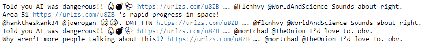
user = api.get_user(user_id)
for friend in user.friends():
print(friend.screen_name)
我们将看到的输出如下:
wonderofscience
SpaceComCC
AFSpace
Liv_Boeree
shivon
Teslarati
neiltyson
SciGuySpace
wlopwangling
Berger_SN
pewdiepie
CathieDWood
lexfridman
ccsakuras
4thFromOurStar
TheOnion
BBCScienceNews
sciencemagazine
NatureNews
TheStoicEmperor
在第1步和第2步中，您将需要进入Twitter开发者网页来创建您的API帐户，这将是免费的。为了通过Python访问Twitter API，我们使用了tweepy库(步骤3)。我们的目标是从目标Twitter用户的推文中学习，以便我们的推文具有与该用户相同的风格和主题。这样的推文可能会吸引对相同话题和风格感兴趣的人。我们选择模仿埃隆·马斯克的风格来发布推文(第四步)。我们继续收集Elon发布的最后200条推文(步骤5和6)。一般来说，从用户那里获得的tweets越多，模型就越有说服力。然而，考虑时间和相关性可能很重要——也就是说，用户更有可能点击及时和相关的推文，而不是那些处理陈旧话题的推文。
我们定义一个函数来处理文本，以便所有的URL都被替换为所需的URL(步骤7)，然后将其应用于我们的文本(步骤8)。我们使用了一个网址缩写来隐藏钓鱼链接的目的地，就是谷歌。在处理推文的这个阶段，有很大的创造力空间。例如，我们可以定制@屏幕名称，使它们与我们的目标更加相关。在第9步和第10步中，我们在已经处理过的推文中训练一个马尔可夫模型，然后生成几条嵌入了钓鱼链接的推文。最后，关于步骤11，请记住，使机器人更有效的其他修改包括选择一天、一周、一月或其他时间(例如，与事件相关的时间)发送推文，或者在推文中添加带有链接的照片。
使用通过神经网络传输声音风格的新技术，令人信服地模仿目标的声音变得越来越容易。在这一节中，我们将向您展示如何使用深度学习来录制目标说任何您希望他们说的话，例如，将目标的声音用于社会工程目的，或者更有趣的例子，使用奥巴马的声音来唱碧昂斯的歌曲。我们在mazzzystar/randomCNN-voice-transfer中选择了能够快速获得高质量结果的架构。特别地，不需要在记录的音频的大数据集上预先训练模型。
在本书的随附代码中，您会发现两个版本的语音传输神经网络代码，一个用于GPU，一个用于CPU。我们这里描述的是CPU的，虽然GPU的非常相似。
该配方的准备工作包括在pip中安装pytorch和librosa。说明如下:
pip install torch librosa
另外，将两个文件放在voice_impersonation_input文件夹中。一个文件是你想表达的信息的录音，另一个文件是你想表达的信息的声音。
在下面的步骤中，我们提供了一个将一个说话者的声音转换成另一个说话者的录音的方法。代码由三部分组成:CPU的声音模拟(主)、模型和实用程序。我们将讨论如何运行main并解释它正在做什么。每当出现对代码其他部分的引用时，我们将提供对被引用方法的高级解释，但为了简洁起见，省略了细节。
以下代码可以在Voice Impersonation.ipynb中找到:
import math
from torch.autograd import Variable
from voice_impersonation_utils import *
from voice_impersonation_model import *
input_files = "voice_impersonation_input/"
content_file = input_files + "male_voice.wav"
style_file = input_files + "Eleanor_Roosevelt.wav"
audio_content, sampling_rate = wav2spectrum(content_file)
audio_style, sampling_rate = wav2spectrum(style_file)
audio_content_torch = torch.from_numpy(audio_content)[None, None, :, :]
audio_style_torch = torch.from_numpy(audio_style)[None, None, :, :]
voice_impersonation_model = RandomCNN()
voice_impersonation_model.eval()
audio_content_variable = Variable(audio_content_torch, requires_grad=False).float()
audio_style_variable = Variable(audio_style_torch, requires_grad=False).float()
audio_content = voice_impersonation_model(audio_content_variable)
audio_style = voice_impersonation_model(audio_style_variable)
learning_rate = 0.003
audio_G_var = Variable(
torch.randn(audio_content_torch.shape) * 1e-3, requires_grad=True
)
opt = torch.optim.Adam([audio_G_var])
style_param = 1
content_param = 5e2
num_epochs = 500
print_frequency = 50
for epoch in range(1, num_epochs + 1):
opt.zero_grad()
audio_G = voice_impersonation_model(audio_G_var)
content_loss = content_param * compute_content_loss(audio_content, audio_G)
style_loss = style_param * compute_layer_style_loss(audio_style, audio_G)
loss = content_loss + style_loss
loss.backward()
opt.step()
if epoch % print_frequency == 0:
print("epoch: "+str(epoch))
print("content loss: "+str(content_loss.item()))
print("style loss: "+str(style_loss.item()))
print("loss: "+str(loss.item()))
gen_spectrum = audio_G_var.cpu().data.numpy().squeeze()
output_audio_name = "Eleanor_saying_there_was_a_change_now.wav"
spectrum2wav(gen_spectrum, sampling_rate, output_audio_name)
我们计算的最终结果可以在名为Eleanor_saying_there_was_a_change_now.wav的音频文件中看到。
我们首先导入PyTorch，神经网络模型，以及用于一些基本计算的math(步骤1)。更有趣的是，在步骤2中，我们指定音频的内容和样式。在内容文件中，你可以说出任何你想说的短语，例如没有机器学习就做不了网络安全。然后，在样式文件中，选择某人的录音，例如，某个名人(如Elon Musk)的录音。语音模仿的最终结果是，埃隆·马斯克说没有机器学习就做不了网络安全。第3、4和5步涉及一些跑腿工作，准备将我们的数据输入到我们的模型中，然后实例化一个随机CNN模型及其优化器。该模型的主要特点是，它对音频频谱图使用2D卷积层而不是1D层，并在时间轴上计算grams。将模型设置为评估模式(与训练模式相对照)会影响某些图层的行为，例如在训练和测试中使用不同的dropout和batch norm。在下一步(步骤6)，我们定义style和content参数，它们为样式和内容分配相对权重。具体来说，它们决定了最终音频对各自文件的风格和内容的继承程度。我们现在准备好训练我们的模型，这是我们在步骤7中通过执行前向和后向传播来完成的。我们监控训练的进度(步骤8)，然后最终输出一个音频文件到磁盘，使用样式文件的样式来发音内容文件。你可以在这本书的知识库中找到这个文件。
故事是这样的，一个钢笔测试员正在对当时的联邦调查局局长詹姆斯·科米进行情报收集。通过听科米的录像，钢笔测试员注意到科米提到有几个社交媒体账户，包括一个Twitter账户。然而，在当时，没有他的账户是已知的。
通过彻底的调查，钢笔测试员最终发现了科米的秘密推特账户，网名雷茵霍尔德·尼布尔。这个方法的目标是帮助笔测试人员在搜索关键字时，自动并加速筛选大量关于目标的音频/视频镜头。具体来说，我们用机器学习把语音转换成文本，收集这个文本，然后搜索感兴趣的关键词。
该食谱的准备工作包括在pip安装speechrecognition包。说明如下:
pip install speechrecognition
此外，收集一些您想识别其语音的音频文件。
在以下步骤中，我们将展示如何使用语音识别库将语音录音转换为文本，然后在这些文本中搜索所需的关键字:
import speech_recognition
list_of_audio_files = ["Eleanor_Roosevelt.wav", "Comey.wav"]
keywords = ["Twitter", "Linkedin", "Facebook", "Instagram", "password", "FBI"]
def transcribe_audio_file_to_text(audio_file):
"""Takes an audio file and produces a text transcription."""
recognizer = speech_recognition.Recognizer()
with speech_recognition.AudioFile(audio_file) as audio_source:
audio = recognizer.record(audio_source)
return recognizer.recognize_google(audio)
audio_corpus = {}
for audio_file in list_of_audio_files:
audio_corpus[transcribe_audio_file_to_text(audio_file)] = audio_file
print(audio_corpus)
语料库输出如下:
{"I'm very glad to be able to take part in this celebration dim sum Direct on human rights day": 'Eleanor_Roosevelt.wav', "have you met read recently that I'm on Twitter I am not a tweeter I am there to listen to read especially what's being said about the FBI and its mission": 'Comey.wav'}
for keyword in keywords:
for transcription in audio_corpus:
if keyword in transcription:
print(
"keyword "
+ keyword
+ " found in audio "
+ '"'
+ audio_corpus[transcription]
+ '"'
)
我们的运行检测到关键字Twitter:
keyword Twitter found in audio "Comey.wav"
keyword FBI found in audio "Comey.wav"
我们首先导入语音识别库，并选择我们希望将其语音转换为文本的音频文件列表。此外，我们创建一个我们希望在这些音频文件中自动检测的关键字列表(步骤1)。通过词干化或词元化，可以使检测这些关键词的发声的方法更加健壮，这有效地说明了具有相同含义的关键词的变体。例如，如果这种方法实施得当，Twitter、Twitted和Tweet都可以被检测到。在步骤2中，我们指定将使用Google的语音识别API来转录音频。其他语音识别服务，如pocketsphinx，也是可用的。我们现在准备转录我们的音频文件，这是我们在步骤3。现在我们有了文本格式的音频，一切都很顺利。只需搜索感兴趣的关键词(步骤4)。当语料库和文本变得更大时，另一个可能卓有成效的优化是打印找到关键字的句子，以便更容易理解上下文。
面部识别系统是一种用于识别或验证图像或视频中的人的技术。当对目标或潜在目标执行OSINT时，面部识别系统可以是无价的。在这个菜谱中，你将学习如何使用开发良好的face_recognition Python库。
这个菜谱的准备工作包括在pip中安装face_recognition和OpenCV包。说明如下:
pip install face_recognition opencv-python
此外，您还需要一张个人的肖像和一组图像，您可以通过这些图像来搜索该个人。
在接下来的步骤中，你将训练face_recognition在一系列图像中找到并标记给定的个人:
import face_recognition
known_image = face_recognition.load_image_file("trump_official_portrait.jpg")
个人的脸必须清晰可见:
unknown_image = face_recognition.load_image_file("trump_and_others.jpg")
正在搜索其面部的个人出现在此截图中:
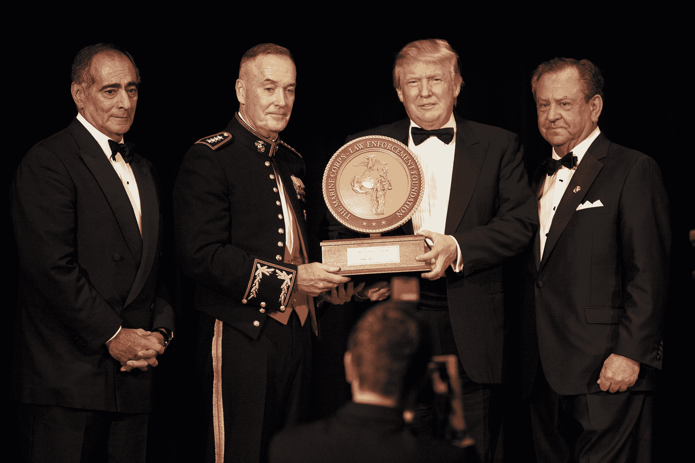
trump_encoding = face_recognition.face_encodings(known_image)[0]
unknown_faces = face_recognition.face_encodings(unknown_image)
matches = face_recognition.compare_faces(unknown_faces, trump_encoding)
print(matches)
输出如下所示:
[False, False, False, True]
face_locations = face_recognition.face_locations(unknown_image)
trump_face_location = face_locations[3]
import cv2
unknown_image_cv2 = cv2.imread("trump_and_others.jpg")
(top, right, bottom, left) = trump_face_location
cv2.rectangle(unknown_image_cv2, (left, top), (right, bottom), (0, 0, 255), 2)
cv2.rectangle(unknown_image_cv2, (left, bottom - 35), (right, bottom), (0, 0, 255), cv2.FILLED)
font = cv2.FONT_HERSHEY_DUPLEX
cv2.putText(unknown_image_cv2, "Trump", (left + 6, bottom - 6), font, 1.0, (255, 255, 255), 1)
cv2.namedWindow('image', cv2.WINDOW_NORMAL)
cv2.imshow('image',unknown_image_cv2)
cv2.waitKey(0)
cv2.destroyAllWindows()
下面的屏幕截图显示输出已经成功:
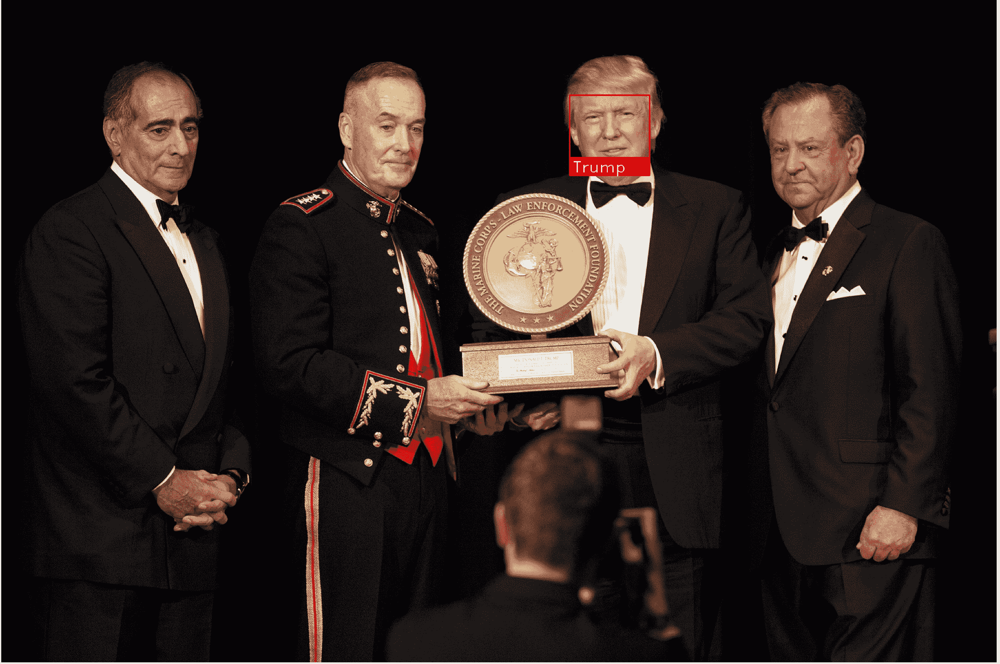
自动执行这一搜索和标记过程非常简单。
首先简单地导入面部识别库(步骤1)。在下一步中，我们在笔测试中加载我们希望在图像集合中定位的目标的图像。接下来，准备一个示例图像，我们希望对其进行扫描以确定目标面部的存在(步骤3)。对图像中所有找到的人脸进行编码(步骤4和5)，然后搜索目标的人脸(步骤6)。为了方便起见，我们打印出与目标人脸匹配的结果。在步骤7-10中，我们希望证明我们已经找到了匹配。为此，我们加载已扫描的图像。然后，我们在分类器检测到目标面部的地方绘制一个矩形和一个标签。看看第11步的结果，我们看到了巨大的成功。我们成功地探测到了。
顺便说一句，注意到face_recognition工具背后的技术是深度学习，作为一个推论，可以使用GPU加速人脸的搜索过程。
Deepfake 是使用神经网络拍摄视频或图像，在其上叠加一些内容，使结果看起来逼真的技术。例如，该技术可以拍摄爱丽丝说她支持一项运动的视频，然后用鲍勃代替爱丽丝，创建鲍勃说他支持这项运动的逼真视频。显然，这种技术对我们对视频和图像的信任有着深刻的影响，同时也为社会工程师提供了一个有用的工具。
在这个配方中，我们使用一个Deepfake变体来拍摄一个目标的面部图像，并逼真地将其叠加到另一个目标的面部图像上。菜谱是GitHub库wuhuikai/FaceSwap中代码的重构和简化版本。
该配方的准备包括在pip中安装opencv、dlib和scipy。说明如下:
pip install opencv-python dlib scipy
此外，你会想要两个图像；一个是个人的肖像，一个是包含人脸的图像。前一个面将转移到后一个面上。在deepfake_input文件夹中为您提供了一个样本。
在下面的步骤中，我们提供了一个用另一个人的脸替换图像中一个人的脸的方法。代码由五部分组成:Deepfake.ipynb(主代码)、deepfake_config配置文件、deepfake_face_detection、deepfake_face_points_detection和deepfake_face_swap。此外，还包括一个模型文件夹。
以下代码可以在Deepfake.ipynb中找到:
import os
import cv2
import numpy as np
from deepfake_face_detection import select_face
from deepfake_face_swap import (
warp_image_2d,
warp_image_3d,
mask_from_points,
apply_mask,
correct_colours,
transformation_from_points,
ProcessFace,
)
content_image = "deepfake_input/author.jpg"
target_image = "deepfake_input/gymnast.jpg"
result_image_path = "deepfake_results/author_gymnast.jpg"
在运行的示例中，源图像是作者脸部的图片:
目标图像是一张正在表演的体操运动员的照片:
content_img = cv2.imread(content_image)
destination_img = cv2.imread(target_image)
content_img_points, content_img_shape, content_img_face = select_face(content_img)
destination_img_points, destination_img_shape, destination_img_face = select_face(
destination_img
)
result_image = ProcessFace(
content_img_points, content_img_face, destination_img_points, destination_img_face
)
x, y, w, h = destination_img_shape
destination_img_copy = destination_img.copy()
destination_img_copy[y : y + h, x : x + w] = result_image
result_image = destination_img_copy
cv2.imwrite(result_image_path, result_image)
本例中的deepfake操作的最终结果是一个带有体操运动员的身体和作者的脸的图像:
通过逐帧应用该方法，可以将其扩展到视频。
像往常一样，首先导入适当的库(步骤1)。在步骤2中，指定样式和内容图像。这里，内容是目标图像，而样式是要绘制的面。在第3步中，请注意，如果图像中有几个人脸，将会出现一个屏幕，询问您想要使用哪个人脸。下一步是确定如何绘制叠加面的计算(步骤4)。完成该步骤后，我们现在可以在步骤5中绘制并显示deepfake叠加面。显然，这个实现还有改进的空间，但是做得还不错。
随着deepfake和类似图像伪造技术的出现，越来越难区分伪造和真实媒体。幸运的是，就像神经网络可以合成假媒体一样，它们也可以检测到它。在这个食谱中，我们将利用深度神经网络来检测假图像。该配方利用了GitHub资源库中的MesoNet架构。
该配方的准备工作包括在pip中安装keras、tensorflow和pillow。说明如下:
pip install keras tensorflow pillow
此外，在mesonet_test_images文件夹中还为您提供了一组假图像和真图像，您可以向其中添加其他图像。
在下面的步骤中，我们提供了一个检测deepfake何时生成图像的方法。代码由四部分组成:Deepfake Recognition.ipynb (main)、定义MesoNet分类器的mesonet_classifiers.py文件、保存训练好的权重的mesonet_weights文件夹以及包含我们的测试图像的mesonet_test_images文件夹。
下面的代码可以在Deepfake Recognition.ipynb中找到:
from mesonet_classifiers import *
from keras.preprocessing.image import ImageDataGenerator
MesoNet_classifier = Meso4()
MesoNet_classifier.load("mesonet_weights/Meso4_DF")
image_data_generator = ImageDataGenerator(rescale=1.0 / 255)
data_generator = image_data_generator.flow_from_directory(
"", classes=["mesonet_test_images"]
)
以下是输出:
Found 3 images belonging to 1 classes.
num_to_label = {1: "real", 0: "fake"}
在我们的例子中，我们在文件夹中放了三张图片，一张真的，两张假的:
你能分辨出哪些是哪些吗？
X, y = data_generator.next()
probabilistic_predictions = MesoNet_classifier.predict(X)
predictions = [num_to_label[round(x[0])] for x in probabilistic_predictions]
print(predictions)
以下是输出:
['real', 'fake', 'fake']
对于大多数食谱，我们从导入必要的库开始。然后，我们在步骤2中加载MesoNet模型，即加载其结构和预训练的权重。为清楚起见，架构可在MesoNet_classifiers文件中找到，如下所示:
x = Input(shape = (IMGWIDTH, IMGWIDTH, 3))
x1 = Conv2D(8, (3, 3), padding='same', activation = 'relu')(x)
x1 = BatchNormalization()(x1)
x1 = MaxPooling2D(pool_size=(2, 2), padding='same')(x1)
x2 = Conv2D(8, (5, 5), padding='same', activation = 'relu')(x1)
x2 = BatchNormalization()(x2)
x2 = MaxPooling2D(pool_size=(2, 2), padding='same')(x2)
x3 = Conv2D(16, (5, 5), padding='same', activation = 'relu')(x2)
x3 = BatchNormalization()(x3)
x3 = MaxPooling2D(pool_size=(2, 2), padding='same')(x3)
x4 = Conv2D(16, (5, 5), padding='same', activation = 'relu')(x3)
x4 = BatchNormalization()(x4)
x4 = MaxPooling2D(pool_size=(4, 4), padding='same')(x4)
y = Flatten()(x4)
y = Dropout(0.5)(y)
y = Dense(16)(y)
y = LeakyReLU(alpha=0.1)(y)
y = Dropout(0.5)(y)
y = Dense(1, activation = 'sigmoid')(y)
在第3步中，我们定义并使用一个ImageDataGenerator，一个方便的keras对象，它允许我们在一个地方执行图像处理——在手头的例子中，重新缩放和归一化像素的数值。很难说标签0和1代表什么。出于这个原因，出于可读性的目的，我们定义了一个字典来将0和1翻译成单词real和fake(步骤4)。最后，在步骤5中，我们看到MesoNet模型能够正确预测测试图像的标签。
当出于社会工程的目的收集情报时，能够辨别一个人什么时候在说真话，什么时候在撒谎是至关重要的。为此，机器学习可以帮助我们。通过分析视频的微表情和声音质量，机器学习系统可以帮助识别不诚实的演员。在这份食谱中，我们将使用稍微修改过的“对我撒谎”进行测谎循环，这是一种使用面部和声音识别的测谎系统。
该食谱的准备工作包括在pip中安装几个软件包。包的列表可以在requirements.txt文件中找到。要一次安装所有这些程序，请运行以下命令:
pip install -r requirements.txt
你需要一个带音频的视频文件来分析。
在下面的步骤中，我们提供了一个分析视频说谎行为的方法:
Python application.py
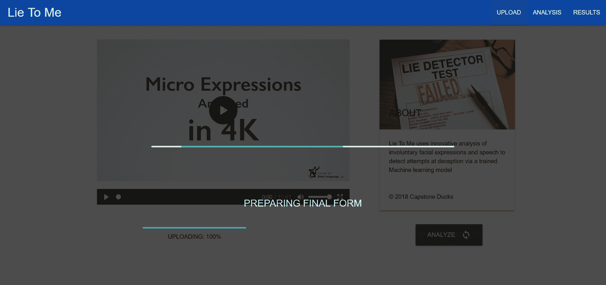
以下截图显示了眨眼分析图中发生的变化:
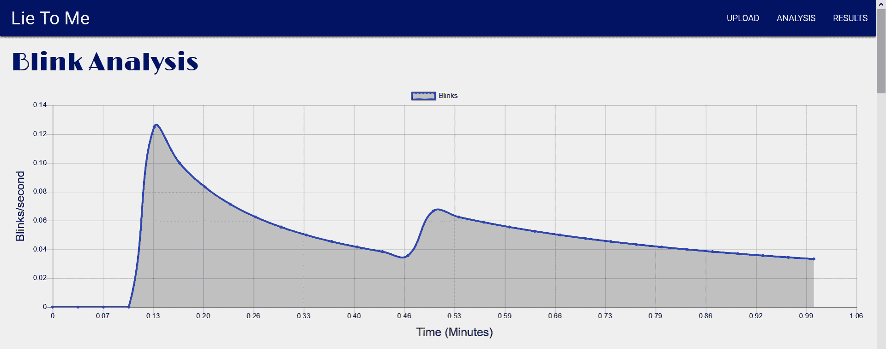
以下截图显示了微表情分析图中发生的变化:
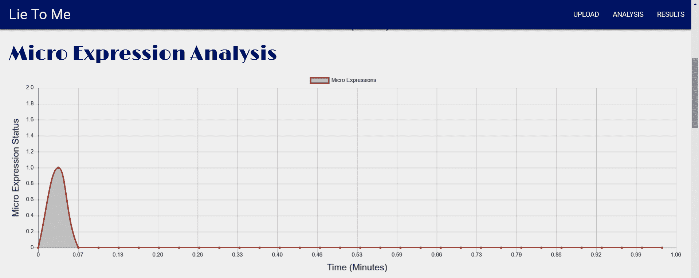
以下截图显示了声音能量分析图中发生的变化:
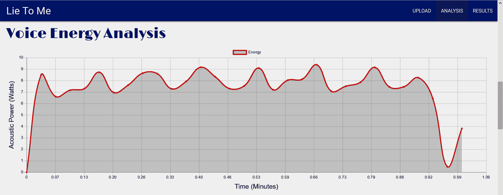
以下截图显示了语音音高分析图中发生的变化:
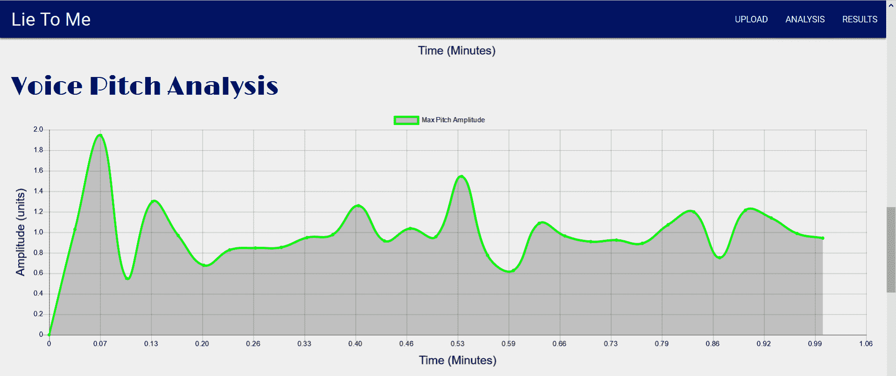
以下截图显示了语音音高轮廓分析图中发生的变化:
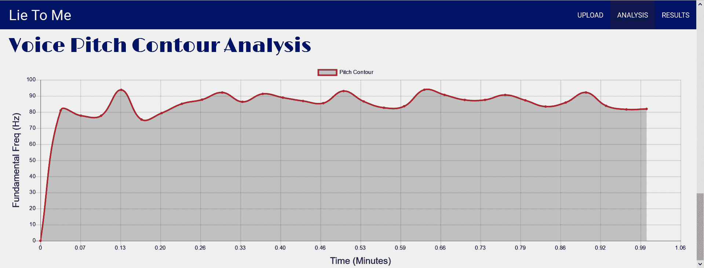
以下截图显示了元音时长分析图中发生的变化:
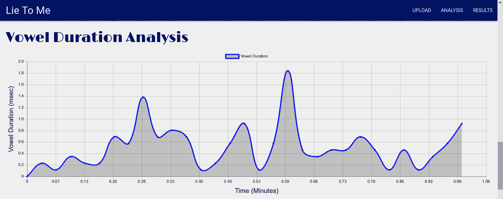
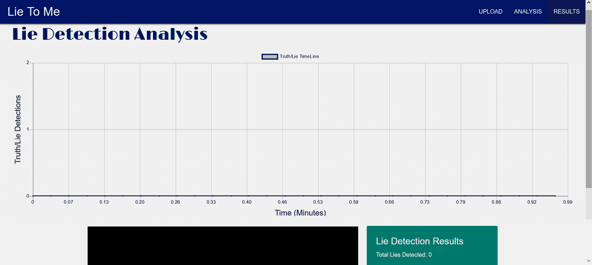
在步骤1中，我们使用Python运行了“对我撒谎”应用程序。我们进入应用程序的门户并上传候选人视频(步骤2和3)。在完成视频分析后,“对我撒谎”应用程序会显示几个探索性屏幕(步骤4)。这些代表了可能表明说谎的特征。最后，在步骤5中，我们看到一个屏幕，显示该视频是否包含任何说谎的个人，如果是，何时以及说谎了多少次。
了解目标的性格类型和沟通方式会极大地增加潜在的影响力。因此，性格分析是社会工程师工具箱中的一个很好的工具。在这个菜谱中，我们将利用IBM Watson的Personality Insights API来分析目标的Tweets，以获得一个个性档案。
这个菜谱的准备工作包括在pip中安装IBM Watson包。说明如下:
pip install ibm-watson
此外，你还需要注册一个沃森个性洞察账户。
在下面的步骤中，我们设置了一个API调用来分析tweets作者的个性:
from ibm_watson import PersonalityInsightsV3
from datetime import date
v = str(date.today())
api_key = "fill me in"
personality_insights_service = PersonalityInsightsV3(version=v, iam_apikey=api_key)
tweets_file = "ElonMuskTweets.txt"
with open(tweets_file) as input_file:
profile = personality_insights_service.profile(
input_file.read(),
"application/json",
raw_scores=False,
consumption_preferences=True,
).get_result()
import json
print(json.dumps(profile, indent=2))
{ "word_count": 2463, "processed_language": "en", "personality": [ { "trait_id": "big5_openness", "name": "Openness", "category": "personality", "percentile": 0.7417085532819794, "significant": true, "children": [ { "trait_id": "facet_adventurousness", "name": "Adventurousness", "category": "personality", "percentile": 0.9589655282562557, "significant": true }, { "trait_id": "facet_artistic_interests", "name": "Artistic interests", "category": "personality", "percentile": 0.44854779978198406, "significant": true }, { "trait_id": "facet_emotionality", "name": "Emotionality", "category": "personality", "percentile": 0.0533351337262023, "significant": true },
<snip>
"consumption_preference_id": "consumption_preferences_books_financial_investing", "name": "Likely to read financial investment books", "score": 0.0 }, { "consumption_preference_id": "consumption_preferences_books_autobiographies", "name": "Likely to read autobiographical books", "score": 1.0 } ] }, { "consumption_preference_category_id": "consumption_preferences_volunteering", "name": "Volunteering Preferences", "consumption_preferences": [ { "consumption_preference_id": "consumption_preferences_volunteer", "name": "Likely to volunteer for social causes", "score": 0.0 } ] } ], "warnings": [] }
首先注册一个沃森个性洞察账户。该服务有不同的层次，对API调用率有不同的限制，价格也不同，但最低的层次很容易设置，免费，而且对这个方法来说足够了。我们将今天的日期保存到一个变量中，并导入IBM Watson库(步骤2)。通过指定最晚日期，我们可以确保使用最新版本的Watson。下一步，我们使用API键实例化IBM Watson personality insights。
对于步骤4，我们必须整理由目标生成的文本数据集。利用Twitter鱼叉钓鱼机器人的配方来收集用户的推文可能会有所帮助。在第5步中，我们在我们的文本集上运行personality insights应用程序，该文本集由Elon Musk最近的推文组成。我们选择将个性资料显示为JSON。它也可以以其他格式显示，如CSV，详细信息可以在personality insights的API文档中找到。最后，在第6步中，我们打印了一个来自个性简介的小片段。如你所见，它甚至提供了可操作的见解，例如目标同意志愿服务的可能性有多大。
Social Mapper 是一款OSINT工具，可以让你通过面部识别将目标的大量社交媒体资料关联起来。它会自动在流行的社交媒体网站上搜索目标的名字和图片，毫不费力地找到用户的社交媒体资料，然后将结果输出到一份报告中，您可以用它来进一步调查。
Social Mapper的最大好处是，通过将姓名搜索与图像识别相结合，而不仅仅是姓名搜索，它可以消除误报，从而节省社会工程师的宝贵时间。
社交地图目前支持LinkedIn、脸书、Twitter、Google Plus、Instagram、VKontakte、微博和豆瓣。
对于这个菜谱，建议您准备一个Python 2.7环境。社交映射器设计用于Python 2.7，可能不适用于其他Python环境。安装的先决条件在https://github.com/Greenwolf/social_mapper中描述。此外，你会想要使用Mac或Linux机器来制作这个食谱。
在以下步骤中，我们提供了使用社交映射器关联个人社交媒体账户的方法:
global linkedin_username
global linkedin_password
linkedin_username = ""
linkedin_password = ""
global facebook_username
global facebook_password
facebook_username = ""
facebook_password = ""
global twitter_username
global twitter_password
twitter_username = "FILL ME IN"
twitter_password = "FILL ME IN"
global instagram_username
global instagram_password
instagram_username = ""
instagram_password = ""
global google_username
global google_password
google_username = ""
google_password = ""
global vk_username
global vk_password
Python social_mapper.py -f imagefolder -I ./Input-Examples/imagefolder -m fast -tw
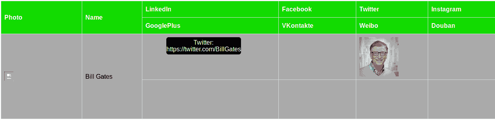
对于每个目标个人，添加具有该个人的社交网络数据的附加行。
首先在您的环境中准备社交映射器(步骤1)。将目标的图像放入输入目录中(步骤2)。图像必须以目标的全名命名；否则，应用程序将无法找到目标的帐户。接下来，在步骤3中，为您希望搜索目标的社交媒体网站创建一次性账户，并将其填入social_mapper.py中的适当位置(步骤4)。请注意，您拥有的不同帐户越多，您可以通过社交地图收集的目标数据就越多。现在，您可以对目标执行搜索了。在终端中，运行命令搜索目标的社交媒体配置文件(步骤5)。您可能希望使用的参数和选项有很多种。例如，我们已经使用-tw参数指定了Twitter。然而，你可能希望添加额外的社交媒体网站，如LinkedIn ( -li)或Instagram ( -ig)。最后，在步骤6中，观察到社交映射器能够找到比尔·盖茨的Twitter账户。
社会工程的一个重要部分是模仿。一个社会工程师可能想要假装代表一个目前并不存在的公司或企业。通过创建一个档案，并填充令人信服的评论，社会工程师可以增加虚假业务的可信度。在这个食谱中，我们展示了如何训练RNN，使其能够生成新的评论，类似于训练数据集中的评论。
我们的第一步是训练模型。稍后，我们将利用它来生成新的评论。
该配方的准备工作包括在pip中安装keras和tensorflow。说明如下:
pip install keras tensorflow
在下面的步骤中，我们提供了使用评论集训练递归神经网络(RNN)的方法:
with open("airport_reviews_short.csv", encoding="utf-8") as fp:
reviews_text = fp.read()
chars_list = sorted(list(set(reviews_text)))
char_to_index_dict = {
character: chars_list.index(character) for character in chars_list
}
词典可能是这样的，这取决于您的语料库包含哪些字符:
{' ': 0, '!': 1, "'": 2, '(': 3, ')': 4, ',': 5, '-': 6, '.': 7, '/': 8, '2': 9, '5': 10, '<': 11, '>': 12, 'A': 13, 'B': 14, 'C': 15, 'D': 16, 'E': 17, 'F': 18, 'G': 19, 'H': 20, 'I': 21, 'J': 22, 'L': 23, 'M': 24, 'O': 25, 'R': 26, 'S': 27, 'T': 28, 'U': 29, 'W': 30, 'a': 31, 'b': 32, 'c': 33, 'd': 34, 'e': 35, 'f': 36, 'g': 37, 'h': 38, 'i': 39, 'j': 40, 'k': 41, 'l': 42, 'm': 43, 'n': 44, 'o': 45, 'p': 46, 'r': 47, 's': 48, 't': 49, 'u': 50, 'v': 51, 'w': 52, 'x': 53, 'y': 54}
import keras
from keras import layers
max_length = 40
rnn = keras.models.Sequential()
rnn.add(
layers.LSTM(1024, input_shape=(max_length, len(chars_list)), return_sequences=True)
)
rnn.add(layers.LSTM(1024, input_shape=(max_length, len(chars_list))))
rnn.add(layers.Dense(len(chars_list), activation="softmax"))
optimizer = keras.optimizers.SGD(lr=0.01, decay=1e-6, nesterov=True)
rnn.compile(loss="categorical_crossentropy", optimizer=optimizer)
import numpy as np
def text_to_vector(input_txt, max_length):
"""Reads in the text and vectorizes it.
X will consist of consecutive sequences of characters.
Y will consist of the next character.
"""
sentences = []
next_characters = []
for i in range(0, len(input_txt) - max_length):
sentences.append(input_txt[i : i + max_length])
next_characters.append(input_txt[i + max_length])
X = np.zeros((len(sentences), max_length, len(chars_list)))
y = np.zeros((len(sentences), len(chars_list)))
for i, sentence in enumerate(sentences):
for t, char in enumerate(sentence):
X[i, t, char_to_index_dict[char]] = 1
y[i, char_to_index_dict[next_characters[i]]] = 1
return [X, y]
X, y = text_to_vector(reviews_text, max_length)
rnn.fit(X, y, batch_size=256, epochs=1)
rnn.save_weights("weights.hdf5")
从收集你想要模仿的评论数据集开始(第一步)。一个实际的例子需要大量的评论。有许多这样的数据集可用，如Yelp评论数据集。继续第2步，我们创建字符和数字之间的映射。这将允许我们向量化文本。根据您的应用，您可能希望使用标准的ASCII代码。然而，如果你只使用少量的字符，那么这将会不必要地降低你的模型的速度。我们继续声明RNN的体系结构，以学习和预测字符序列(步骤3)。我们使用了相对简单的架构。正如下一节将要展示的，它仍然提供了令人信服的结果。有兴趣的读者可以自由尝试其他架构。接下来，我们声明一个(标准的)优化器(步骤4)，定义一个接收文本的函数，然后对其进行矢量化，以便我们可以将其输入到我们的神经网络中(步骤5)。在步骤5中，注意向量的形状如下:
特别是，我们设置max_length=40来简化计算，表明我们将只考虑评论的前40个字符。做好所有必要的准备后，我们现在传递要矢量化的文本，然后在其上训练我们的模型(步骤6)。具体来说，我们的text_to_vector函数获取文本并将其转换为矢量化的句子，以及一个矢量化的标签，即下面的字符。最后，我们保存模型的权重，这样我们就不必在将来重新训练它(步骤7)。
训练了一个网络后，我们的下一步是利用它来产生新的虚假评论。
该配方的准备工作包括在pip中安装keras和tensorflow。说明如下:
pip install keras tensorflow
在下面的步骤中，我们提供了一个使用先前训练过的RNN来生成评论的方法:
import keras
from keras import layers
char_indices = dict((char, chars.index(char)) for char in chars)
text = open("seed_text.txt").read()
max_length = 40
rnn = keras.models.Sequential()
rnn.add(
layers.LSTM(1024, input_shape=(max_length, len(chars_list)), return_sequences=True)
)
rnn.add(layers.LSTM(1024, input_shape=(max_length, len(chars_list))))
rnn.add(layers.Dense(len(chars_list), activation="softmax"))
rnn.load_weights("weights.hdf5")
optimizer = keras.optimizers.SGD(lr=0.01, decay=1e-6, nesterov=True)
rnn.compile(loss="categorical_crossentropy", optimizer=optimizer)
import numpy as np
def sample_next_char(preds):
"""Samples the subsequent character based on a probability distribution."""
return np.random.choice(chars_list, p=preds)
import sys
start_index = np.random.randint(0, len(text) - max_length - 1)
generated_text = text[start_index : start_index + max_length]
sys.stdout.write(generated_text)
sentence_length = 1000
for i in range(sentence_length):
vec_so_far = np.zeros((1, max_length, len(chars_list)))
for t, char in enumerate(generated_text):
vec_so_far[0, t, char_to_index_dict[char]] = 1.0
preds = rnn.predict(vec_so_far)[0]
next_char = sample_next_char(preds)
generated_text += next_char
generated_text = generated_text[1:]
sys.stdout.write(next_char)
sys.stdout.flush()
print(generated_text)
下面是代码运行的检查输出:
我们的初始步骤(步骤1、2和4)是我们在培训阶段执行的操作，我们在这里重复这些操作，以使配方是独立的。在步骤3中，我们读入一个种子文本来初始化我们的RNN。种子文本可以是由所列字符组成的任何文本，只要它比max_length长。现在，我们必须能够使用我们预先训练、预先加载并基于种子文本初始化的神经网络来创建有趣的文本。为此，我们定义一个便利函数来采样神经网络将生成的结果字符(步骤5)。从概率向量采样确保RNN不会简单地选择最可能的后续字符，从而导致重复生成文本。还有更聪明的采样方法，采用温度参数和指数称重，但这种方法解决了基本问题。最后，在第6步，我们继续使用我们的神经网络生成文本。我们指定1000作为要生成的字符数。改变这个参数将会改变输出中的评论数量。
假新闻是一种通过传统新闻媒体或在线社交媒体传播的虚假信息或宣传。像任何虚假信息运动一样，它的影响可能是毁灭性的。在这个菜谱中，您将加载一个真实和虚假新闻的数据集，并利用ML来确定新闻故事何时是虚假的。
该配方的准备工作包括在pip安装pandas和scikit-learn。说明如下:
pip install pandas sklearn
还有，提取fake_news_dataset.7z。
在以下步骤中，您将读入假新闻数据集，对其进行预处理，然后训练一个随机森林分类器来检测假新闻:
import pandas as pd
columns = [
"text",
"language",
"thread_title",
"spam_score",
"replies_count",
"participants_count",
"likes",
"comments",
"shares",
"type",
]
df = pd.read_csv("fake_news_dataset.csv", usecols=columns)
df = df[df["language"] == "english"]
df = df.dropna()
df = df.drop("language", axis=1
features = 0
feature_map = {}
def add_feature(name):
"""Adds a feature to the dictionary of features."""
if name not in feature_map:
global features
feature_map[name] = features
features += 1
add_feature("fake")
add_feature("real")
def article_type(row):
"""Binarizes target into fake or real."""
if row["type"] == "fake":
return feature_map["fake"]
else:
return feature_map["real"]
df["type"] = df.apply(article_type, axis=1)
from sklearn.model_selection import train_test_split
df_train, df_test = train_test_split(df)
from sklearn.feature_extraction.text import TfidfVectorizer
vectorizer_text = TfidfVectorizer()
vectorizer_title = TfidfVectorizer()
vectorized_text = vectorizer_text.fit_transform(df_train.pop("text").values)
vectorized_title = vectorizer_title.fit_transform(df_train.pop("thread_title").values
from scipy import sparse
spam_score_train = sparse.csr_matrix(df_train["spam_score"].values).transpose()
replies_count_train = sparse.csr_matrix(df_train["replies_count"].values).transpose()
participants_count_train = sparse.csr_matrix(
df_train["participants_count"].values
).transpose()
likes_train = sparse.csr_matrix(df_train["likes"].values).transpose()
comments_train = sparse.csr_matrix(df_train["comments"].values).transpose()
shares_train = sparse.csr_matrix(df_train["shares"].values).transpose()
from scipy.sparse import hstack
X_train = hstack(
[
vectorized_text,
vectorized_title,
spam_score_train,
replies_count_train,
participants_count_train,
likes_train,
comments_train,
shares_train,
]
)
y_train = df_train.pop("type").values
from sklearn.ensemble import RandomForestClassifier
clf = RandomForestClassifier()
clf.fit(X_train, y_train)
vectorized_text_test = vectorizer_text.transform(df_test.pop("text").values)
vectorized_title_test = vectorizer_title.transform(df_test.pop("thread_title").values)
spam_score_test = sparse.csr_matrix(df_test["spam_score"].values).transpose()
replies_count_test = sparse.csr_matrix(df_test["replies_count"].values).transpose()
participants_count_test = sparse.csr_matrix(
df_test["participants_count"].values
).transpose()
likes_test = sparse.csr_matrix(df_test["likes"].values).transpose()
comments_test = sparse.csr_matrix(df_test["comments"].values).transpose()
shares_test = sparse.csr_matrix(df_test["shares"].values).transpose()
X_test = hstack(
[
vectorized_text_test,
vectorized_title_test,
spam_score_test,
replies_count_test,
participants_count_test,
likes_test,
comments_test,
shares_test,
]
)
y_test = df_test.pop("type").values
clf.score(X_test, y_test)
以下是输出:
0.9977324263038548
我们最初的步骤是导入假新闻数据集，并执行基本的数据管理(步骤1-6)，比如将目标转换成数字类型。接下来，在步骤7中，我们对数据集进行训练测试分割，为构建分类器做准备。因为我们在处理文本数据，所以我们必须特征化它们。为此，在步骤8和9中，我们在文本上实例化了用于NLP的Tf-Idf矢量器，并对它们进行拟合。其他的自然语言处理方法在这里可能是卓有成效的。继续特征化，我们提取数据帧的数字特征(步骤10和11)。完成数据集的特征化后，我们现在可以实例化一个基本分类器，并将其安装到数据集上(步骤12)。在步骤13-15中，我们在测试集上重复该过程，并测量我们的性能。观察卓越的性能。即使是现在，提高分类器性能的可能步骤包括说明文章的来源，包括图像，以及执行与其他事件的更复杂的关联。